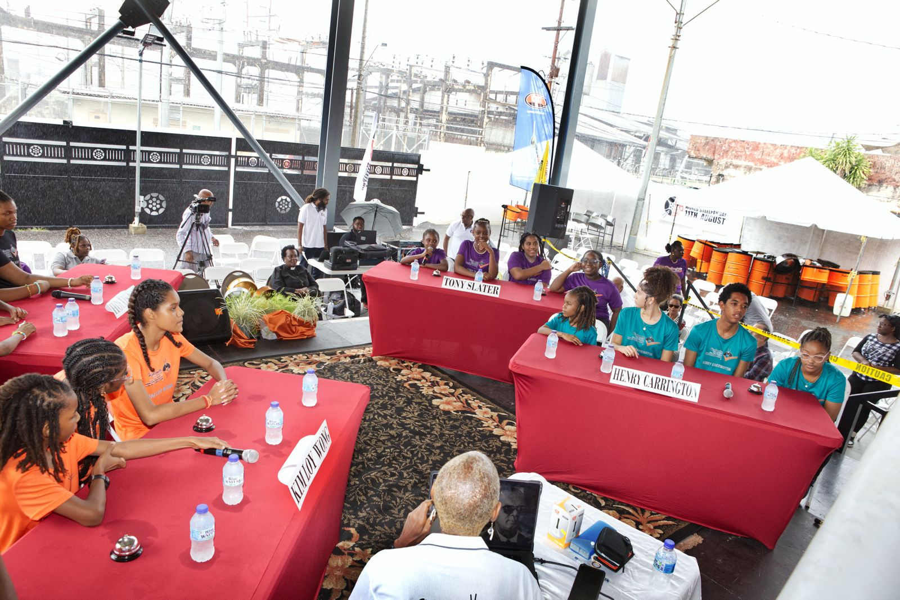
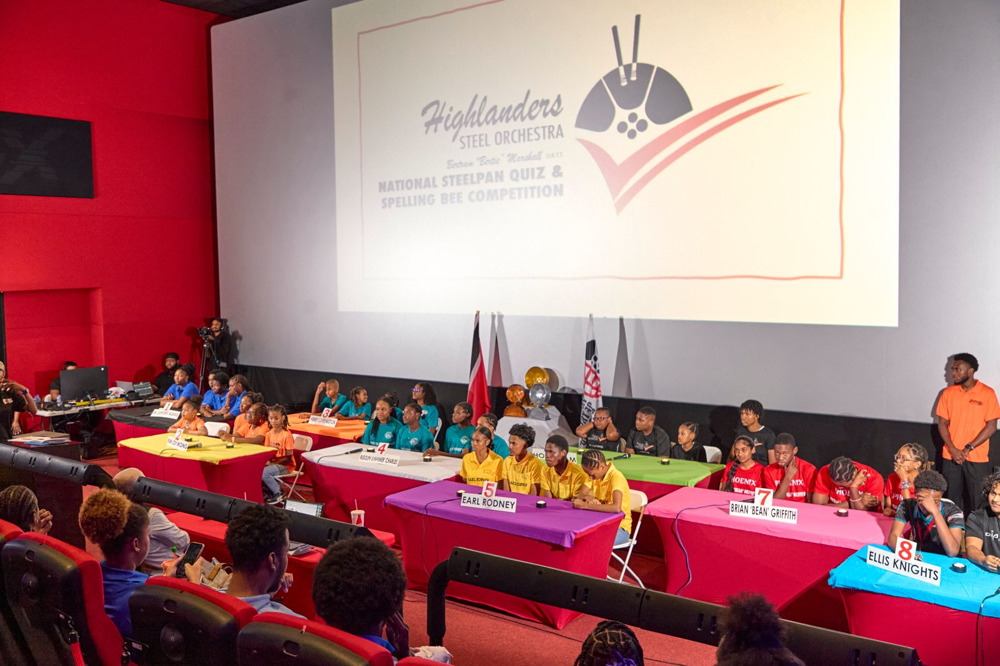

The inaugural Bertram "Bertie" Marshall Steelpan Quiz and Spelling Bee competition was held on 10 August 2024 at the Highlanders Steel Orchestra panyard at 34 Eastern Main Road, Success Village, Laventille (corner of Erica Street and Eastern Main Road).
Since it was essentially a trial run for future Quizzes, all participants were chosen from Highlanders Youth Steel Orchestra. There were four teams, each having four contestants. Each team was named for an icon of the early Highlanders Steel Orchestra (1950s-1970s) - Kim Loy Wong, Hollis Kim, Henry Carrington, and Tony Slater.
The contestants were between 7 and 18 years old, so they were evenly split into primary and secondary categories, with each team having 2 primary and 2 secondary school students.
The competition comprised three rounds of 20 questions each. The questions were of varying types - audio, spelling, visual, and regular.
The winning team was Henry Carrington; second place went to Kim Loy Wong; third place to Hollis Kam, and fourth place to Tony Slater.
Specially crafted gold, silver, and bronze steelpan trophies were presented to the top three teams by Mr. Michael Cooper, Owner/Chairman of Panland Ltd. and Chair of the Steel Manufacturers Association of Trinidad and Tobago (SMATT).
Each contestant received a cash prize as well.

The second edition of the Quiz was held at the IMAX Cinema at 1 Woodbrook Place on 10 August 2025.This time, there were eight teams: three representing Highlanders; one from each of the Laventille secondary schools - Success, Morvant, and Russell Latapy; and two invited orchestras - The Diatonic Steel Orchestra and Pan Institute from Siparia, and Phoenix Steel Orchestra from Belmont.
The results can be viewed here
← Back to the Pan